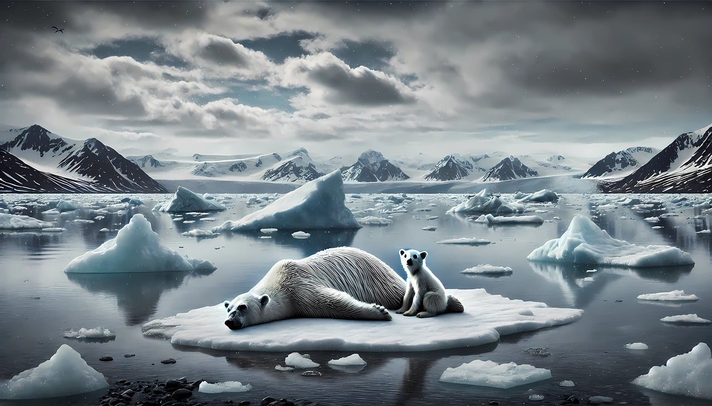

Impactos Globais das Mudanças Climáticas
As mudanças climáticas afetam todos os continentes e oceanos, provocando consequências ambientais, sociais e econômicas que ameaçam a vida como conhecemos.
Impactos Ambientais
- Degelo acelerado nas calotas polares
- Elevação do nível do mar
- Extinção de espécies e perda de biodiversidade
- Eventos climáticos extremos como furacões, secas e enchentes
Impactos Sociais
- Deslocamento de populações (refugiados climáticos)
- Insegurança alimentar e hídrica
- Aumento de doenças relacionadas ao clima
- Desigualdade social agravada em regiões vulneráveis
Impactos Econômicos
- Perdas agrícolas e escassez de recursos naturais
- Danos à infraestrutura urbana
- Custos crescentes com desastres naturais
- Impacto no turismo e em setores dependentes do clima
